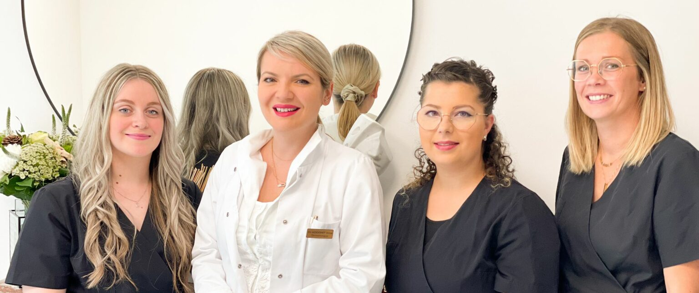

Première consultation esthétique<!-- Departments Section-->
<section class="pb-0">

  <div class="container" style="padding: 20px">
    <div class=" d-lg-block"></div>
    <div class="row">

      <div class=" pb-5 mb-5">
        <h1 class="text-uppercase"><span>Première consultation esthétique</span></h1>
        La  première consultation esthétique est essentielle, c’est l’occasion de connaître  vos demandes et vos doléances, ainsi que votre passé médical, chirurgical et esthétique.
        Elle permet de réaliser une analyse du vieillissement, des possibilités thérapeutiques et à répondre à toutes vos questions.
        <br>Le Docteur Addenet établis avec vous un plan de traitement personnalisé prenant en compte : <br>

        - l’aspect de votre peau (tâches, imperfections, déshydratation, apparition de rides et ridules)<br>
        - l’expressivité de votre visage (rides d’expression)<br>
        - la perte éventuelle de volume et relâchement cutané <br>
        Au cours de cette première consultation, des photographies seront réalisées.
        Le Dr Addenet vous proposera un plan de traitement personnalisé, et vous expliquera les modalités ainsi que les suites de ce dernier.
        <br>Les différents traitements pouvant être combinés afin d’obtenir des résultats naturels et personnels en toute sécurité : comblements, botox, peelings, épilation laser…
        <br>Et pour finir, différents documents vous seront remis, tel qu’un consentement éclairé, une fiche d’information ainsi qu’un devis détaillé.

      </div>
    </div>

  </div>
</section>

